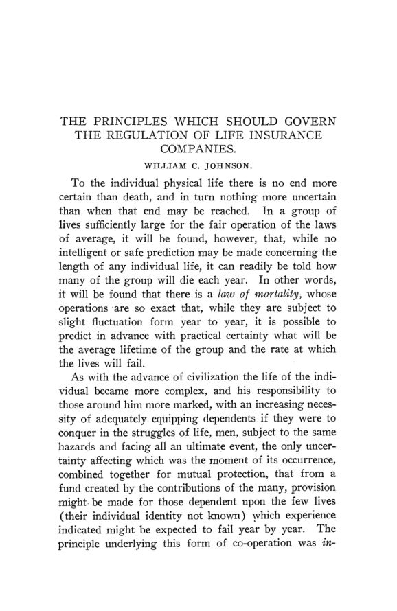

Providence, 1906: a honra nos negócios e o salário arbitrado
Leitura: 8 min
Providence, dezembro de 1906: Jenks pergunta por que homens honrados fazem negócios desonrosos, Clark propõe arbitragem salarial e Ross explica a queda da natalidade no Ocidente.


Jeremiah W. Jenks abriu o discurso presidencial com uma advertência de método: não queria defender nem condenar homens ou práticas, mas entender. O enigma era concreto. Empresários de vida privada exemplar apareciam envolvidos em atos ilegais e desonrosos. Ou o padrão de integridade nos negócios mudara, ou os padrões antigos não se ajustavam às condições modernas.
A décima nona reunião anual se realizou em Providence, Rhode Island, de 26 a 28 de dezembro de 1906, e os trabalhos saíram como nº 1 do vol. 8 da terceira série. Depois do discurso vieram a arbitragem de salários, três mesas-redondas, a natalidade no Ocidente, Babeuf, os estágios do desenvolvimento econômico, a regulação dos seguros, a relação entre tarifa protecionista e trustes e o trabalho infantil. Quase todos os temas tiveram debatedores.
Por que homens honrados fazem negócios desonrosos?
Jenks apontou quatro traços do negócio moderno: a escala muito maior, a perda do contato pessoal com operários e clientes, o papel dos diretores como fiduciários de milhares de acionistas e os lucros de monopólios legais, mas econômica e socialmente injustificáveis. O diretor passa a agir como o governante de um pequeno Estado: o acionista está perto, o público parece distante. Os remédios propostos foram mudar as condições por lei, pagar o justo pelo serviço prestado e ampliar a publicidade. Panaceia legislativa, disse, não havia. O padrão até então fora a maior recompensa pelo menor serviço; o mais adequado seria
“o maior serviço possível por uma recompensa justa” (“the greatest service possible for a just reward”)
Com que régua um tribunal deve fixar salários?
John B. Clark não pôde apresentar o trabalho; Henry Rogers Seager leu o resumo. Clark sustentou que o salário tende ao produto do trabalho marginal social, que os monopólios rebaixam esse padrão e que sindicatos capazes de defender pela força os postos vagos numa greve podem superá-lo. Propôs uma arbitragem semicompulsória: a produção continua durante a investigação, e quem rejeitar a sentença perde o posto.
F. W. Taussig duvidou que a teoria da produtividade imputada ajudasse um tribunal. O melhor conselho seria
“dizer-lhe que exerça seu simples bom senso” (“to tell it to exercise its plain common sense”)
Para Taussig, o critério é a “taxa justa de mercado”: a que se paga no longo prazo por trabalhadores capazes, desconsiderando taxas obtidas pela violência e sem olhar o lucro do empregador. John A. Ryan pôs o salário digno acima da produtividade; Seager declarou-se convertido à ideia de salários mínimos; Otto M. Eidlitz defendeu a arbitragem voluntária da construção civil de Nova York.
O que se discutiu nas mesas-redondas?
Foram três. Na de ensino comercial superior, F. A. Cleveland apresentou um currículo universitário de administração e contabilidade, e Charles W. Mixter o chamou de monstruosidade educacional se oferecido na graduação. Na de transportes, William Z. Ripley listou os problemas pendentes da nova lei de comércio interestadual. Na de moeda e bancos, Maurice L. Muhleman atribuiu as crises de juros à inelasticidade da moeda americana e defendeu notas bancárias lastreadas no crédito e um banco central.
Por que o Ocidente passou a ter menos filhos?
Edward A. Ross partiu de Malthus. A população da Europa saltara de 187 milhões para 400 milhões no século XIX, mas a natalidade caía havia trinta anos. A causa, sustentou, estava na vontade humana: democracia e ascensão social, difusão de novos desejos de consumo, emancipação da mulher, declínio da crença religiosa e instrução. Viu nisso um movimento “no fundo salutar” e enumerou riscos que, no vocabulário da época, chamou de raciais e de seleção entre camadas sociais.
Quem deve regular o seguro de vida?
Maurice H. Robinson defendeu governança interna mais representativa, publicidade, controle federal das seguradoras interestaduais e o fim de boa parte das restrições legais; argumentou que vender seguro é comércio, apesar de a Suprema Corte ter decidido o contrário desde Paul vs. Virginia, de 1868. William C. Johnson preferiu publicidade e prestação de contas à interferência do Estado na gestão, e atacou os tributos sobre prêmios.
A tarifa é a mãe dos trustes?
Três trabalhos responderam. Albert Clarke negou: os trustes existem também sob livre-comércio, e a proteção promove a concorrência doméstica. Byron W. Holt afirmou que a tarifa é, de longe, o principal fator de monopólio no país e citou o depoimento de H. O. Havemeyer, do truste do açúcar, à Industrial Commission em 1899:
“A mãe de todos os trustes é a lei da tarifa aduaneira” (“The mother of all trusts is the customs tariff bill”)
A. W. Flux analisou de que modo a tarifa permite ao truste manter preços internos acima dos de exportação e comparou preços de ferro e aço nos Estados Unidos e na Inglaterra. Lembrou que o trilho de aço americano estava fixado em US$ 28 por tonelada havia cinco anos.
Quantas crianças trabalhavam?
Samuel McCune Lindsay, num resumo recebido tarde, expôs o programa do movimento contra o trabalho infantil: nenhum assalariado com menos de 14 anos, proibição de trabalho noturno e perigoso até os 16 e certificado de emprego entre 14 e 16 anos. Citou o projeto Beveridge-Parsons, então no Congresso, e anexou dados do censo federal.
Na minha leitura
Na minha leitura, a sessão sobre arbitragem é a que mais rende. Clark oferece uma régua teórica, o produto do trabalho marginal, mas não diz como medi-la num caso concreto; Taussig responde com uma régua observável, o salário de mercado de trabalho comparável, e com regras para depurá-la da violência e do lucro do patrão. Ryan e Seager deslocam a discussão para outro critério, o salário mínimo decente, que não deriva de nenhuma das duas réguas. É o dilema de todo regulador: um padrão de eficiência que não se observa, um padrão de mercado que se observa mas pode estar contaminado, ou um padrão normativo assumido como tal.
O discurso de Jenks e as sessões de seguros convergem num ponto de método. Jenks descreve o diretor como agente de acionistas distantes, que perde de vista o público; Robinson e Johnson discordam quanto ao grau de intervenção, mas ambos tratam a publicidade das contas como o instrumento central. Muhleman, na mesa de bancos, aplica lógica parecida à moeda: o problema não é a quantidade, mas um arranjo institucional que não se ajusta à demanda sazonal. Em três campos distintos, o diagnóstico é de desenho de incentivos e de informação, não de caráter individual.
Glossário
- Discurso presidencial
- conferência do presidente da associação que abre a reunião anual.
- Rebate
- abatimento secreto concedido por ferrovias a grandes embarcadores sobre a tarifa publicada.
- Truste
- combinação de empresas antes independentes para controlar a produção ou a venda de um produto.
- Produto do trabalho marginal
- acréscimo de produção atribuível ao último trabalhador empregado; na teoria de Clark, o padrão natural do salário.
- Arbitragem semicompulsória
- investigação obrigatória dos conflitos, com produção mantida e perda do posto para quem rejeitar a sentença.
- Escala móvel (sliding scale)
- acordo que faz o salário variar com o preço do produto dentro de certos limites.
- Salário digno (living wage)
- remuneração suficiente para um padrão decente de vida, independentemente da produtividade.
- Call money
- empréstimo bancário resgatável à vista, garantido por ações e títulos.
- Notas lastreadas no crédito (credit notes)
- papel-moeda emitido por bancos sem a exigência de títulos públicos como garantia.
- Estágios do desenvolvimento econômico
- esquemas da escola histórica alemã que dividem a história econômica em fases sucessivas.
- Comissão Armstrong
- comissão do legislativo de Nova York que investigou as grandes seguradoras de vida.
- Neomalthusianismo
- defesa da limitação voluntária dos nascimentos como solução para a pressão populacional.
Artigos desta edição
- The Modern Standard of Business Honor — Jeremiah W. Jenks; discurso presidencial (pp. 1–22). Jenks parte de um enigma: empresários de vida privada exemplar envolvidos em atos ilegais e desonrosos. Descarta a explicação pela fraqueza individual e aponta a inércia dos costumes diante de quatro novidades: a escala dos negócios, a perda do contato pessoal, a posição dos diretores como fiduciários de milhares de acionistas e os lucros de monopólios legais. Compara o diretor ao governante que invoca a razão de Estado e estende a análise a dirigentes sindicais e à publicidade comercial. Propõe que o Estado mude as condições, por exemplo proibindo fábricas insalubres e trabalho infantil, que se pague o justo pelo serviço e que se amplie a publicidade. Conclui que não há panaceia legislativa. JSTOR
- On What Principles Should a Court of Arbitration Proceed in Determining the Rate of Wages? — John B. Clark (pp. 23–28). Resumo lido por Seager. Clark sustenta que, numa sociedade progressiva, o salário persegue um padrão crescente dado pelo produto do trabalho marginal social. Monopólios rebaixam esse padrão; o trabalhador isolado pode receber menos que ele; sindicatos capazes de impedir pela força a ocupação dos postos vagos podem obter mais. Um diagrama ordena os casos, de monopólio com trabalho organizado, no topo, a trabalho desempregado, na base. A proposta é uma arbitragem semicompulsória: investigação obrigatória, produção mantida, posto assegurado a quem aceitar a sentença e perdido por quem a rejeitar. Assim, conclui, os salários se aproximariam do padrão natural e a força teria pouco papel. JSTOR
- Wages Adjusted by Arbitration-Discussion — Henry Rogers Seager, F. W. Taussig, Louis B. Schram, Adna F. Weber, John A. Ryan, David I. Green, Jacob H. Hollander, John Martin e Otto M. Eidlitz (pp. 29–53). Taussig propõe a “taxa justa de mercado” e o bom senso; Schram sugere uma lista de ao menos 25 árbitros oficiais; Weber, o padrão de vida e a lei canadense de 1903; Ryan, o salário digno acima da produtividade; Hollander e Martin contestam premissas de Clark; Seager adere ao salário mínimo; Eidlitz defende a arbitragem voluntária. JSTOR
- Round Table Meetings — Joseph French Johnson, F. A. Cleveland, Henry D. Sharpe, Charles W. Mixter, James W. Crook, William Z. Ripley, Maurice L. Muhleman e outros (pp. 54–75). Três mesas-redondas. Ensino comercial superior: Cleveland apresenta um currículo de administração e contabilidade com cursos profissionais, científicos, história, línguas, matemática e lógica; Sharpe diz que a boa gestão é bom senso e experiência; Mixter aceita o plano só na pós-graduação e teme ver a economia trocada pela “arte de fazer dinheiro”; Crook relata a pressão por cursos práticos em Amherst. Transportes: Ripley, com Frank Haigh Dixon na presidência, lista quatro problemas da nova lei de comércio interestadual. Moeda e bancos, presidida por Davis R. Dewey: Muhleman culpa a inelasticidade da moeda pelas oscilações de juros, descreve o projeto de notas lastreadas no crédito em tramitação e defende um banco central. JSTOR
- Western Civilization and the Birth-Rate — Edward A. Ross (pp. 76–89). Ross parte de Malthus e de tabelas de natalidade da Europa, da Australásia e dos Estados Unidos, inclusive o número de filhos de diplomados de três faculdades americanas. Rejeita explicações por esterilidade, divórcio ou casamento tardio e atribui a queda à vontade, moldada por democracia, difusão do consumo, emancipação da mulher, declínio religioso e instrução. Entre os efeitos, lista bem-estar, longevidade, menor mortalidade infantil e o fim da pressão populacional. Entre os riscos, a restrição por ambição pessoal, as famílias de um ou dois filhos, a diferença de fecundidade entre camadas sociais e a competição entre povos, em linguagem racial da época. Conclui que o movimento é no fundo salutar. JSTOR
- Western Civilization and Birth-Rate.-Discussion — Frank A. Fetter, William B. Bailey, Henry C. Potter, Emily Balch, I. M. Rubinow, C. W. A. Veditz e Walter Willcox (pp. 90–112). Fetter pede que a proposição de Malthus seja abandonada; Bailey destaca a democracia; Balch trata da natalidade menor da população de pais nativos; Rubinow, Veditz, Potter e Willcox comentam causas e efeitos. JSTOR
- Babeuf's Place in the History of Socialism — Ulysses G. Weatherly (pp. 113–124). Weatherly contesta Sombart, para quem o movimento de 1793 foi essencialmente não proletário, e sustenta que os jacobinos caminhavam para o controle social da propriedade. Babeuf, preso em Arras em meados de 1795, aderiu ao comunismo e passou a atacar a propriedade privada como obstáculo à igualdade política. O autor descreve as ideias babouvistas sobre exploração do trabalho, máquinas, artes e administração central da produção. A tese é que Babeuf foi o elo entre a democracia política do século XVIII e o socialismo revolucionário moderno, por meio da história da conspiração publicada por Buonarroti em 1828 e de sua influência sobre Louis Blanc. JSTOR
- Some Recent Theories Regarding the Stages of Economic Development — Edwin F. Gay (pp. 125–126). Resumo de um trabalho a sair no Quarterly Journal of Economics. Gay revê os esquemas de estágios de List, Roscher, Hildebrand, Knies, Rodbertus e Marx e examina os de Schmoller e Bücher, que critica por imprecisões históricas. Conclui que os estágios propostos são rótulos sugestivos, mas inexatos, de valor limitado e provisório. JSTOR
- Stages of Economic Development.-Discussion — Katharine Coman, Ernest L. Bogart, Richard T. Ely e Edwin F. Gay (pp. 127–136). Coman propõe outras sequências possíveis; Bogart discute a validade das generalizações históricas; Ely vê os estágios como molduras convenientes; Gay reafirma sua utilidade provisória. JSTOR
- Government Regulation of Insurance Companies — Maurice H. Robinson (pp. 137–154). Robinson parte da teoria do risco e conclui que regular seguros é função necessária do governo, mais ainda nas grandes companhias, no seguro de vida e no seguro das classes de menor renda. Propõe quatro mudanças: governança interna representativa dos segurados, publicidade com auditoria independente ao modo inglês, controle federal das companhias interestaduais e abolição de boa parte da legislação restritiva. Cita o relatório Armstrong sobre o poder dos dirigentes entrincheirados em procurações. Discute as decisões da Suprema Corte, desde Paul vs. Virginia, de 1868, segundo as quais seguro não é comércio, e argumenta que a venda de seguro é comércio no sentido econômico. JSTOR
- The Principles Which Should Govern the Regulation of Life Insurance Companies — William C. Johnson (pp. 155–188). Johnson parte da lei da mortalidade e define o seguro como indenização, não lucro. Defende que o Estado regule suas criaturas corporativas, mas pela publicidade detalhada e pela prestação de contas dos excedentes, e não pela interferência na gestão. Critica o limite legal de despesas, que trata igualmente companhias diferentes e dificulta a criação de novas. Afirma que a publicidade da investigação Armstrong fez mais bem do que as leis Armstrong. Ataca os impostos sobre prêmios, que somaram quase US$ 7,5 milhões em Nova York em 1905, e propõe tributar, se tanto, só o excedente não distribuído, no valor do custo da supervisão. JSTOR
- The Regulation of Insurance-Discussion — Frank E. Horack, W. G. Langworthy Taylor, Frederick A. Cleveland, Frederick L. Hoffman, Lewis A. Anderson e William C. Johnson (pp. 189–203). Horack defende o controle federal; Taylor critica o seguro dotal; Cleveland e Hoffman comentam os trabalhos; Anderson pergunta a Johnson se publicaria seus fatores de dividendos; Johnson reafirma a publicidade. JSTOR
- The Relation of the Protective Tariff to the Trusts — Albert Clarke (pp. 204–211). Clarke contesta a frase de Havemeyer de que a tarifa é a mãe dos trustes. Cita W. G. Sumner e Richard Olney para mostrar que os trustes resultam de uma mudança geral na organização industrial e existem também sob livre-comércio. Encerra com seis proposições: a proteção promove a concorrência doméstica; não há monopólio protegido salvo trustes internacionais, alcançáveis pelas leis antitruste; preços altos vêm da oferta e da demanda, não dos direitos aduaneiros; a proteção precedeu os trustes; não responde pela desigualdade; e reduzir a tarifa exporia o país a combinações estrangeiras. JSTOR
- The Relation of the Protective Tariff to the Trusts — Byron W. Holt (pp. 212–228). Holt afirma que o elemento essencial de um truste é o monopólio e que a tarifa é, de longe, o principal fator produtor de monopólios no país, além de fortalecer trustes de recursos naturais como minério de ferro, carvão e chumbo. Apoia-se no depoimento de Havemeyer à Industrial Commission em 1899. Aponta a contradição de leis tarifárias que favorecem trustes, como as de McKinley e Dingley, ao lado de leis antitruste, como a Sherman e a Elkins. Conclui que o único remédio é remover a tarifa que protege os trustes. JSTOR
- The Relation of the Protective Tariff to the Trusts — A. W. Flux (pp. 229–248). Flux propõe examinar o problema “à luz seca da razão” antes dos exemplos. Distingue a fusão de estabelecimentos paralelos, que busca economias de escala ou controle da oferta, da integração de etapas de produção. Mostra como a tarifa permite ao truste vender no exterior abaixo do preço interno, com diferença que pode chegar a um frete duplo mais o imposto de importação. Compara preços de ferro-gusa, barras e trilhos nos Estados Unidos e na Inglaterra e conclui que a estabilidade do trilho a US$ 28 não demonstra que os ganhos de eficiência chegam ao consumidor. JSTOR
- The Tariff and the Trusts.-Discussion — Henry B. Gardner, James E. Hagerty e Albert C. Whitaker (pp. 249–255). Gardner concorda com Flux e critica Clarke e Holt por tratamento parcial; Hagerty nega que a tarifa seja a única causa; Whitaker defende a livre formação de trustes com campo competitivo justo. JSTOR
- Child Labor in the United States — Samuel McCune Lindsay (pp. 256–259). Resumo recebido tarde. Lindsay descreve o programa do movimento: nenhum assalariado com menos de 14 anos, proibição de trabalho noturno e perigoso até os 16 e certificado de emprego entre 14 e 16 anos. Cita o projeto Beveridge-Parsons e anexa tabela do censo: 1.750.178 crianças de 10 a 15 anos trabalhavam em 1900. JSTOR
- Child Labor in the United States.-Discussion — Charlotte Perkins Gilman e Francis H. McLean (pp. 260–267). Gilman examina o efeito do trabalho precoce sobre a criança; McLean contesta o argumento da viúva pobre contra a volta das crianças à escola. JSTOR
Fontes
- The Modern Standard of Business Honor (pp. 1–22). JSTOR · Internet Archive (PDF)
- On What Principles Should a Court of Arbitration Proceed in Determining the Rate of Wages? (pp. 23–28). JSTOR · Internet Archive (PDF)
- Wages Adjusted by Arbitration-Discussion (pp. 29–53). JSTOR · Internet Archive (PDF)
- Round Table Meetings (pp. 54–75). JSTOR · Internet Archive (PDF)
- Western Civilization and the Birth-Rate (pp. 76–89). JSTOR · Internet Archive (PDF)
- Western Civilization and Birth-Rate.-Discussion (pp. 90–112). JSTOR · Internet Archive (PDF)
- Babeuf's Place in the History of Socialism (pp. 113–124). JSTOR · Internet Archive (PDF)
- Some Recent Theories Regarding the Stages of Economic Development (pp. 125–126). JSTOR · Internet Archive (PDF)
- Stages of Economic Development.-Discussion (pp. 127–136). JSTOR · Internet Archive (PDF)
- Government Regulation of Insurance Companies (pp. 137–154). JSTOR · Internet Archive (PDF)
- The Principles Which Should Govern the Regulation of Life Insurance Companies (pp. 155–188). JSTOR · Internet Archive (PDF)
- The Regulation of Insurance-Discussion (pp. 189–203). JSTOR · Internet Archive (PDF)
- The Relation of the Protective Tariff to the Trusts (pp. 204–211). JSTOR · Internet Archive (PDF)
- The Relation of the Protective Tariff to the Trusts (pp. 212–228). JSTOR · Internet Archive (PDF)
- The Relation of the Protective Tariff to the Trusts (pp. 229–248). JSTOR · Internet Archive (PDF)
- The Tariff and the Trusts.-Discussion (pp. 249–255). JSTOR · Internet Archive (PDF)
- Child Labor in the United States (pp. 256–259). JSTOR · Internet Archive (PDF)
- Child Labor in the United States.-Discussion (pp. 260–267). JSTOR · Internet Archive (PDF)
- Sumário da edição no JSTOR: Publications of the American Economic Association, 3ª série, vol. 8, nº 1.
Documento em domínio público (EUA, publicado antes de 1931), via JSTOR Early Journal Content e Internet Archive. Resumo e comentário do autor deste site, sem afiliação com a American Economic Association. Encontrou um erro? Escreva: a correção é publicada no próprio texto, com data.
← Nº 81 · Snider, 1906: Wisconsin e o imposto sobre a receita das ferrovias Nº 83 · Bullock, 1907: 125 anos de dívidas e impostos em Massachusetts →